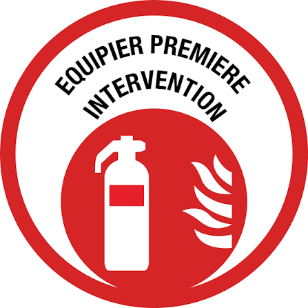

Formation manipulation des extincteurs en entreprise
Apprenez à reconnaître un départ de feu, choisir l'extincteur adapté et intervenir en sécurité grâce à une formation pratique directement dans vos locaux à Paris et en Île-de-France.
📋 Informations clés
Partout en France sur demande
Contenu de la formation extincteurs
Une partie théorique courte, puis une mise en pratique pour apprendre à utiliser un extincteur avec méthode et en sécurité.
Module 1 — Comprendre le feu et les extincteurs
Identifier le risque et choisir le moyen d'extinction adapté
- Le triangle du feu et les principales classes de feu
- Les différents types d'extincteurs et leurs usages
- Choisir l'extincteur adapté à la situation
- Repérer les risques avant d'intervenir
- Donner l'alarme et alerter les secours
- Savoir renoncer si l'intervention devient dangereuse
Module 2 — Manipulation pratique
Prendre en main l'extincteur et acquérir les bons réflexes
- Prise en main et déclenchement d'un extincteur
- Positionnement et distance d'attaque
- Approche d'un départ de feu en sécurité
- Exercices sur feu simulé avec matériel pédagogique
- Correction des gestes et erreurs fréquentes
- Conduite à tenir après l'intervention jusqu'à l'arrivée des secours
Ce que vos équipes sauront faire
Public, conditions & accompagnement
Public cible
Salariés et collaborateurs susceptibles d'être confrontés à un départ de feu dans leur environnement professionnel. Aucun prérequis nécessaire.
Groupe & organisation
- Formation directement dans vos locaux
- Organisation selon le nombre de participants
- Matériel pédagogique professionnel fourni
- Exercices pratiques sur feu simulé
- Contenu adapté aux risques de votre établissement
Votre formateur
- Formateur certifié, agréé INRS
- Sapeur-Pompier
- Master 2 Sécurité & Gestion des risques
- Expérience terrain directe des urgences
- Pédagogie pratique et mémorisable
À l'issue de la formation, chaque participant reçoit :
Tarif de la formation
Le tarif dépend du nombre de groupes, de la durée retenue et du lieu d'intervention. Un devis personnalisé est établi selon votre besoin.
🔥 Formation — Manipulation des extincteurs
Devis personnalisé gratuit sur demande. Réponse sous 24h.